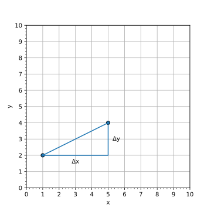
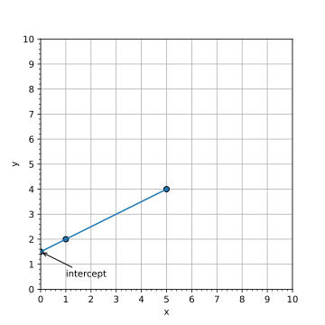
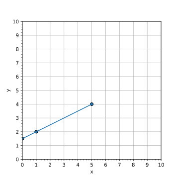

| Notes and Code | Outcome |
|---|---|
SlopeThe slope of the line is the change in y divided by the change in x: $$ \text{slope} = \frac{\Delta y}{\Delta x}$$

For two points, the change in y and change in x are:
$$ \Delta y = y_2 - y_1 $$
$$ \Delta x = x_2 - x_1 $$
|
⇨
|
InterceptFinding the intercept requires a little algebra. Since the general equation for a straight line is: $$ y = mx+b$$ where: $$ m = \text{slope} $$ $$ b = \text{intercept}$$ so to find the intercept we solve this equation for b: $$ y - mx = b $$ therefore, $$ b = y - mx $$ since we already calculated the slope (m), and we know the x and y values of at least one point, we can substitute in the values: $$ x = x_1 $$ $$ y = y_1 $$ to get: $$ b = y_1 - m x_1 $$

|
⇨
|
|
Exercise: Draw a graph showing the two points and the line between them, then extend the line to the boundaries of your graph.
|

|